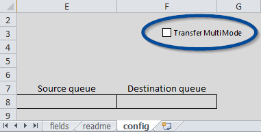

Watch the following video for a quick introduction to Pattern Transfer:
Once you feel comfortable with the basic process take a look at the Auto Label function (launched from the fields sheet):
Lastly try using Transfer Multi Mode (activated on the config sheet):
